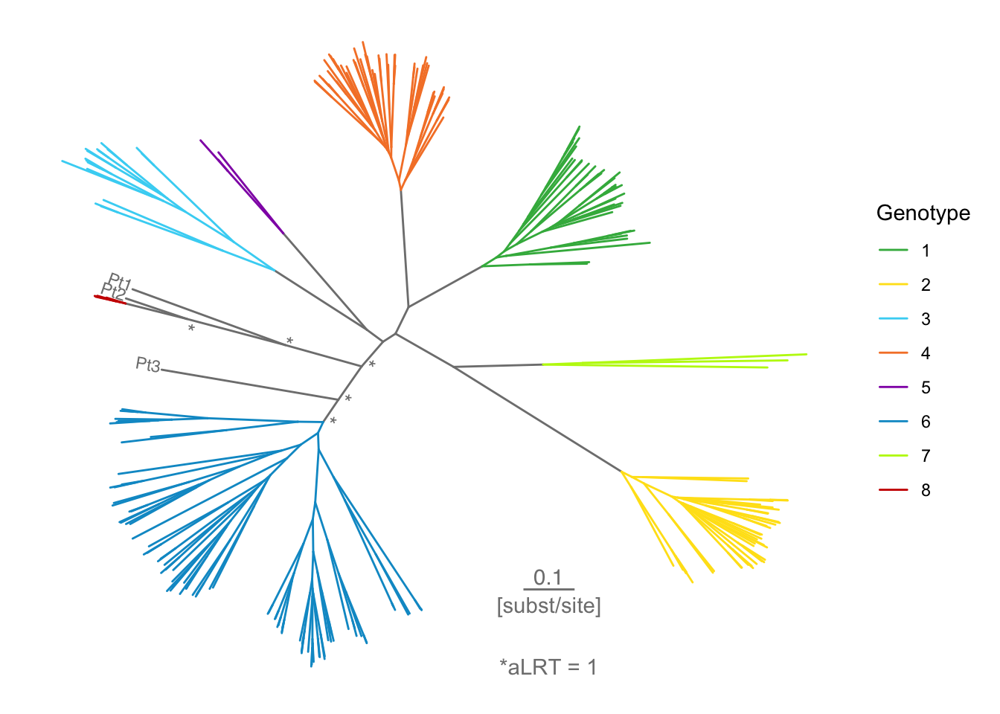
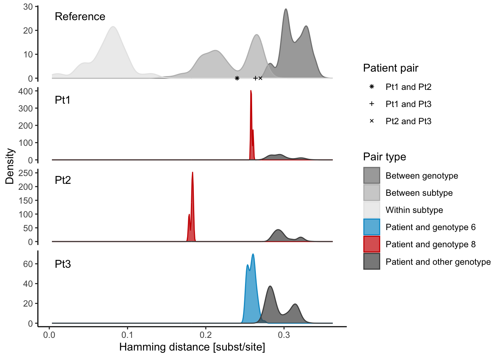
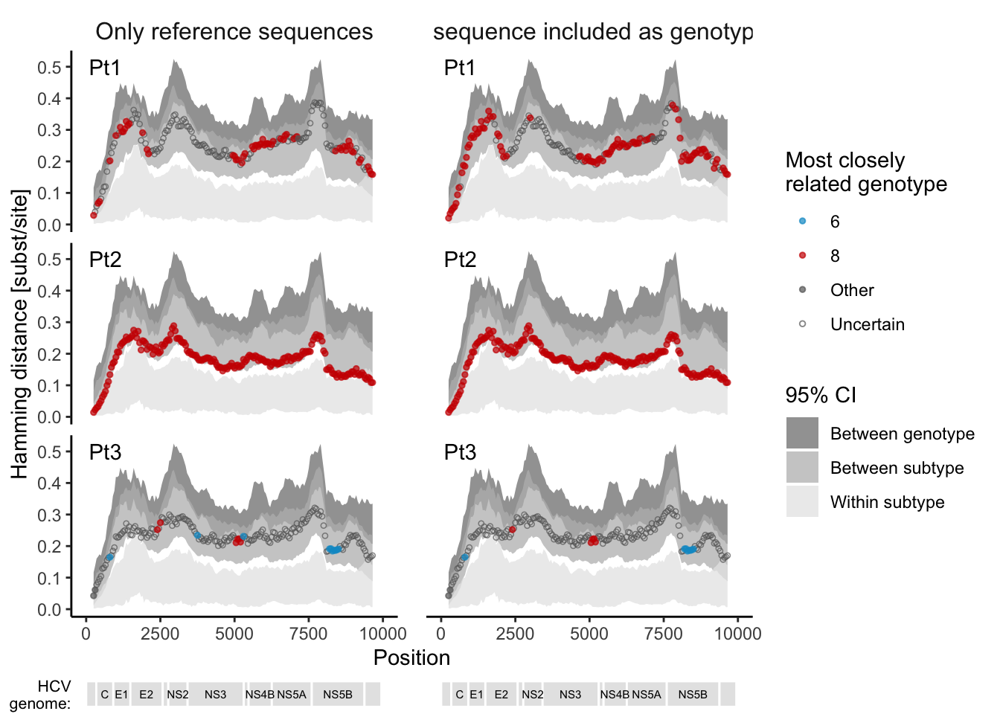
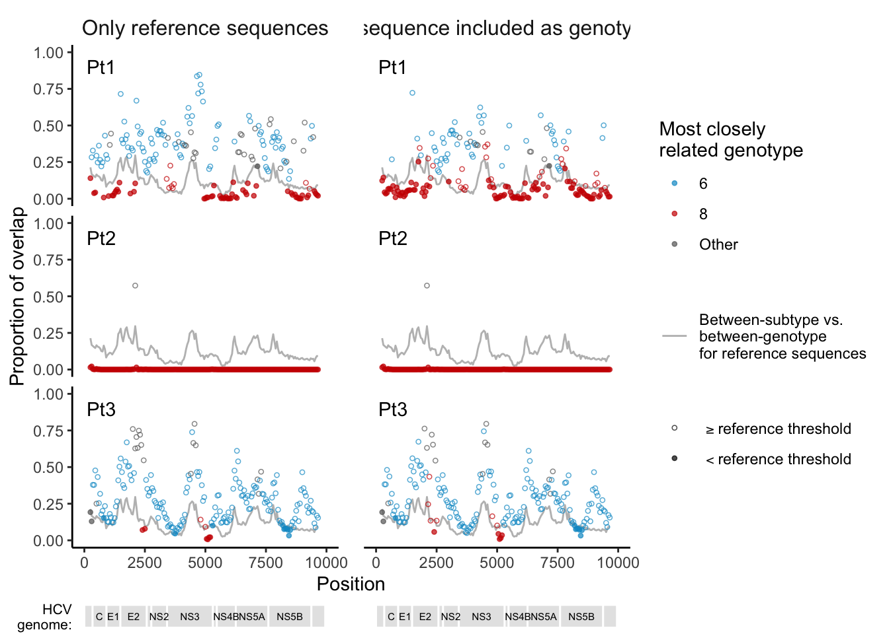
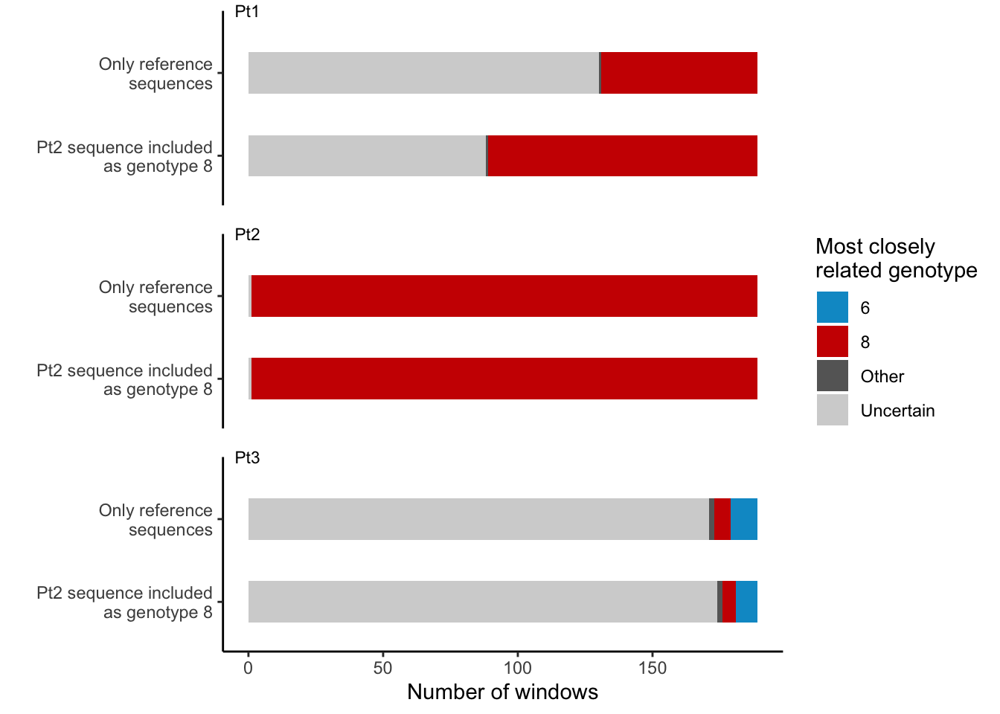
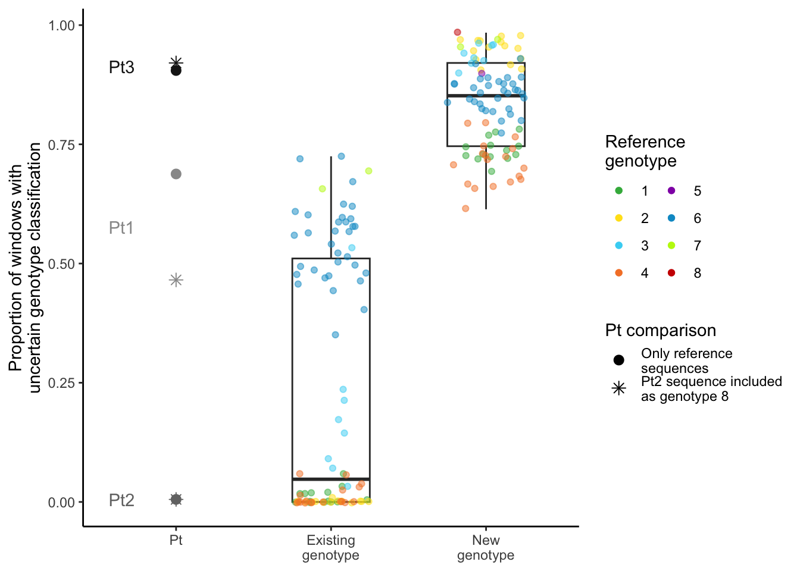

[1] "R version 4.3.1 (2023-06-16)" ape tidyverse igraph ggtree treeio cowplot
"5.7.1" "2.0.0" "1.6.0" "3.9.0" "1.25.2" "1.1.1"
overlapping
"2.1" [1] "R version 4.3.1 (2023-06-16)" ape tidyverse igraph ggtree treeio cowplot
"5.7.1" "2.0.0" "1.6.0" "3.9.0" "1.25.2" "1.1.1"
overlapping
"2.1" 

For each Pt, largest Wilcox p of all pairwise genetic distances among each Pt and reference sequences of a given genotype:
# A tibble: 3 × 2
seq1 wilcox_p
<chr> <dbl>
1 Pt1 0.0286
2 Pt2 0.0286
3 Pt3 0.00174

Proportion of windows that fell into the between subtype 95% CI for each Pt:
# A tibble: 3 × 5
# Groups: seq1 [3]
seq1 between_subtype_95 n tot prop
<chr> <chr> <int> <int> <dbl>
1 Pt1 Between subtype 95% CI 189 189 1
2 Pt2 Between subtype 95% CI 168 189 0.889
3 Pt3 Between subtype 95% CI 186 189 0.984
Proportion of windows that fell into each genotype category (a certain genotype or uncertain):
# A tibble: 18 × 6
# Groups: seq1, type [6]
seq1 type geno n tot prop
<chr> <chr> <fct> <int> <int> <dbl>
1 Pt1 Only reference sequences 8 58 189 0.307
2 Pt1 Only reference sequences Other 1 189 0.00529
3 Pt1 Only reference sequences Uncertain 130 189 0.688
4 Pt1 Pt2 sequence included as genotype 8 8 100 189 0.529
5 Pt1 Pt2 sequence included as genotype 8 Other 1 189 0.00529
6 Pt1 Pt2 sequence included as genotype 8 Uncertain 88 189 0.466
7 Pt2 Only reference sequences 8 188 189 0.995
8 Pt2 Only reference sequences Uncertain 1 189 0.00529
9 Pt2 Pt2 sequence included as genotype 8 8 188 189 0.995
10 Pt2 Pt2 sequence included as genotype 8 Uncertain 1 189 0.00529
11 Pt3 Only reference sequences 6 10 189 0.0529
12 Pt3 Only reference sequences 8 6 189 0.0317
13 Pt3 Only reference sequences Other 2 189 0.0106
14 Pt3 Only reference sequences Uncertain 171 189 0.905
15 Pt3 Pt2 sequence included as genotype 8 6 8 189 0.0423
16 Pt3 Pt2 sequence included as genotype 8 8 5 189 0.0265
17 Pt3 Pt2 sequence included as genotype 8 Other 2 189 0.0106
18 Pt3 Pt2 sequence included as genotype 8 Uncertain 174 189 0.921 
IQR of proportion of windows with uncertain genotype for reference sequences:
# A tibble: 2 × 3
type q25 q75
<fct> <dbl> <dbl>
1 "Existing\ngenotype" 0 0.511
2 "New\ngenotype" 0.746 0.921